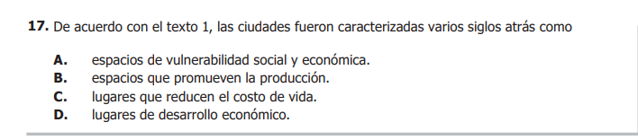

Evalúa habilidades para comprender, interpretar y evaluar textos que pueden encontrarse en la vida cotidiana y en ambitos académicos no especializados.
Las preguntas presentadas en este modulo son de selección multiple con unica respuesta:

Se podria decir que la forma de contestarlas es mediante un cuadernillo de respuestas señalando una sola:
Estos textos no se basan en la estructura tradicional de oraciones y párrafos, sino que utilizan elementos visuales como imágenes, gráficos, tablas y símbolos para transmitir información.
En las pruebas TYT, puedes encontrarlos en forma de infografías, gráficos, cómics y tablas.
Se organizan en oraciones y párrafos que se conectan entre sí, creando un discurso lógico y fluido. Su principal herramienta es el lenguaje escrito, utilizando reglas gramaticales para que la información se entienda de forma clara y coherente.
En las pruebas TYT, puedes encontrar ejemplos de textos continuos en forma de ensayos, novelas y artículos de prensa.
Este nivel busca la comprensión básica del texto, centrándose en la información explícita y el significado de las palabras y frases.
Este nivel busca que el lector vaya más allá de la información explícita, realizando deducciones e inferencias basadas en el texto.
Este nivel implica una evaluación y análisis profundo del texto, considerando las intenciones del autor y la validez de sus argumentos. Esto genera un proceso reflexivo que involucra juicios y opiniones.